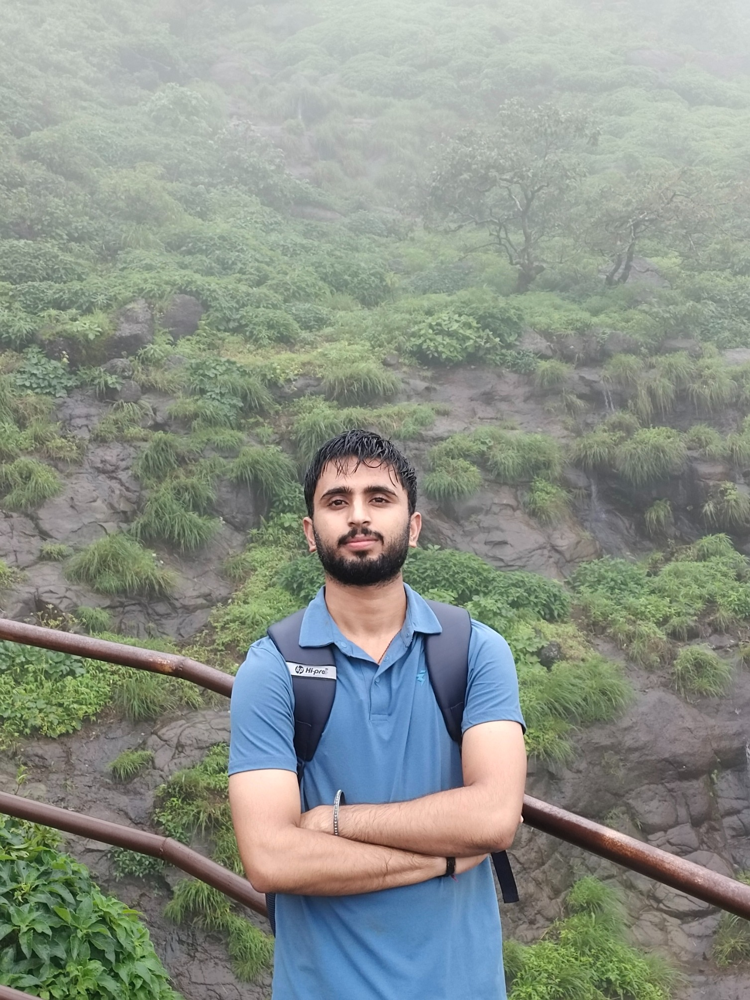

UNDERGRADUATE STUDY
B.Tech — Computer Engineering (Software Engineering)
MIT Academy of Engineering, Pune
2024–2028 · CGPA 8.01 / 10
ABOUT ME
A concise introduction to my academic background, interests, and project-based learning.

Anil Verma · Software Engineering StudentHELLO, I'M ANIL
I'm a Software Engineering student interested in programming, web development, databases, and creating practical applications.
My portfolio documents selected projects and learning experiences. The details here focus on work and skills that can be supported by the available project materials.
Project case studies, technical skills, certificates, academic background, and interests outside development.
ACADEMIC BACKGROUND
Education details.
UNDERGRADUATE STUDY
MIT Academy of Engineering, Pune
2024–2028 · CGPA 8.01 / 10
PROJECT-BASED LEARNING
These are topic areas represented by the selected projects, not claims about outcomes or personal lessons.
MAVI covers groups, expense splitting, balances, and settlements.
Explore MAVI →FinanceSafe brings together scam-related checks and personal finance features.
Explore FinanceSafe →Block Mint provides another project for exploring a web application and its interface.
Explore Block Mint →